exhibition — 2025
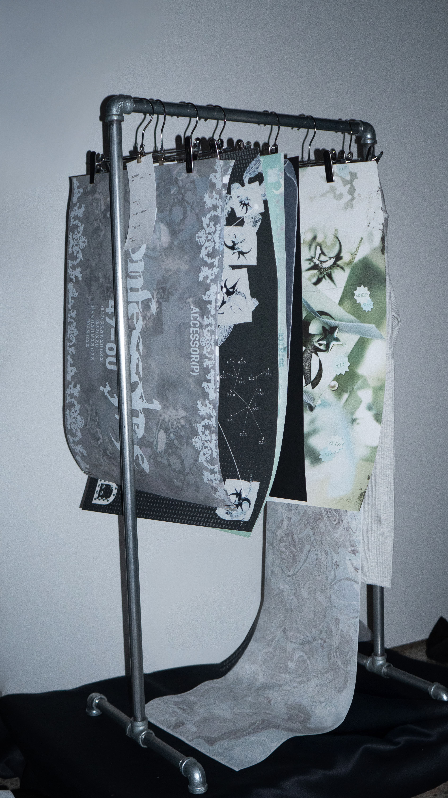

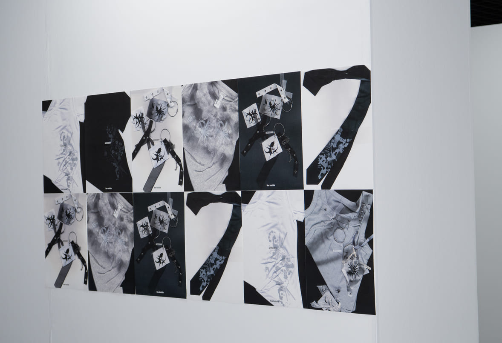
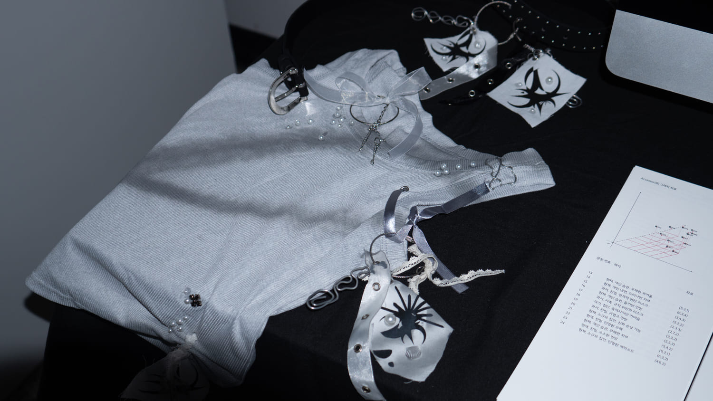
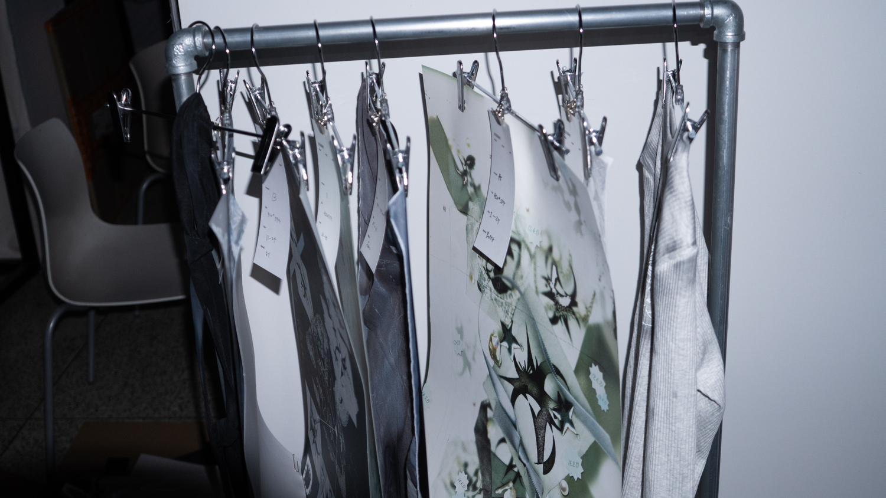
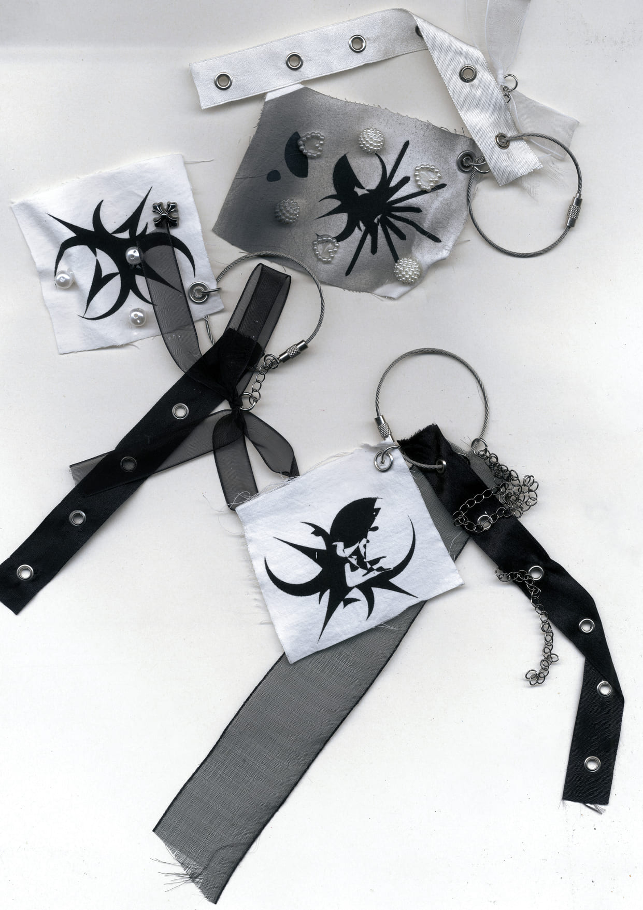
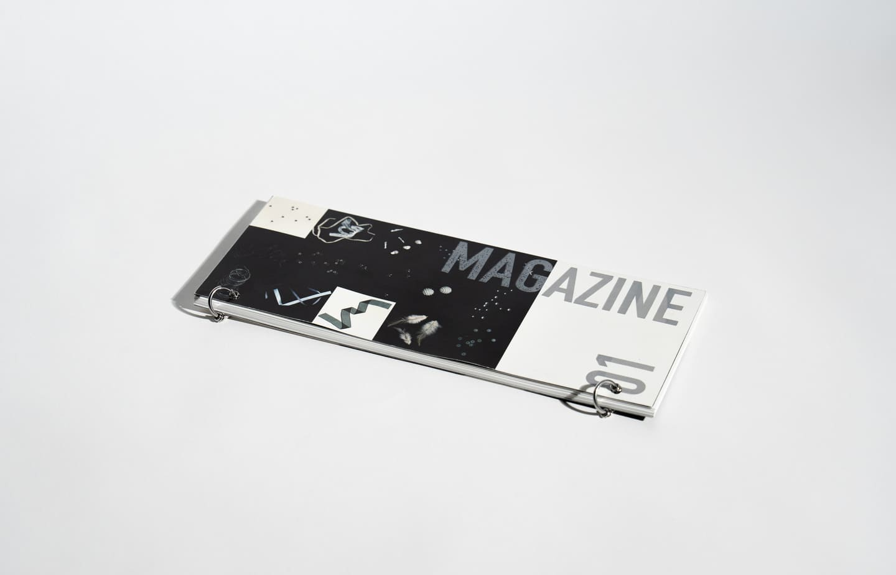
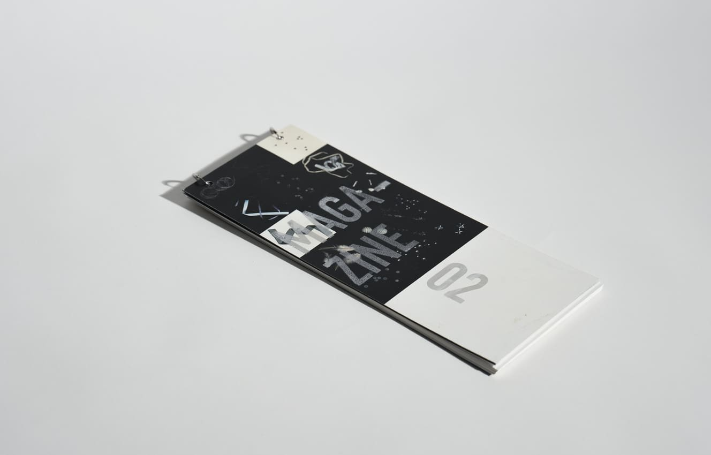
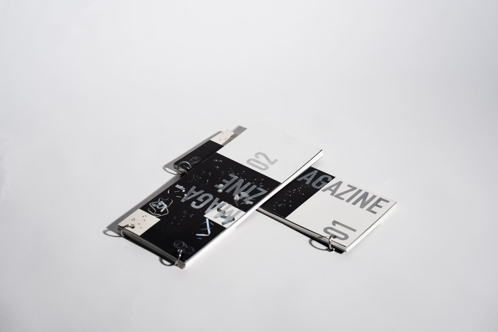
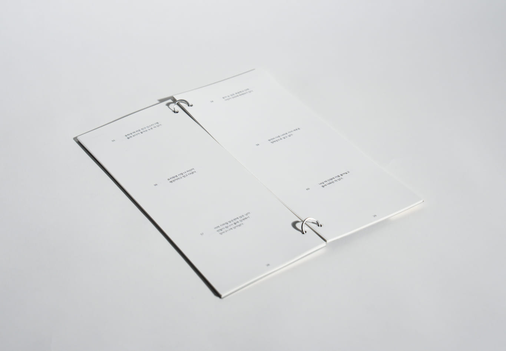
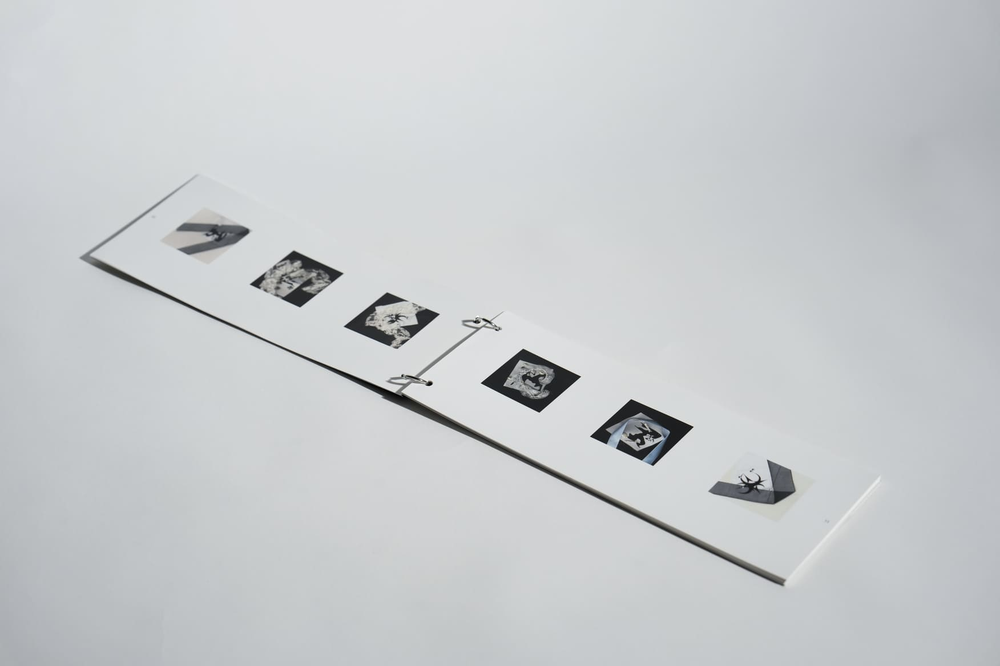
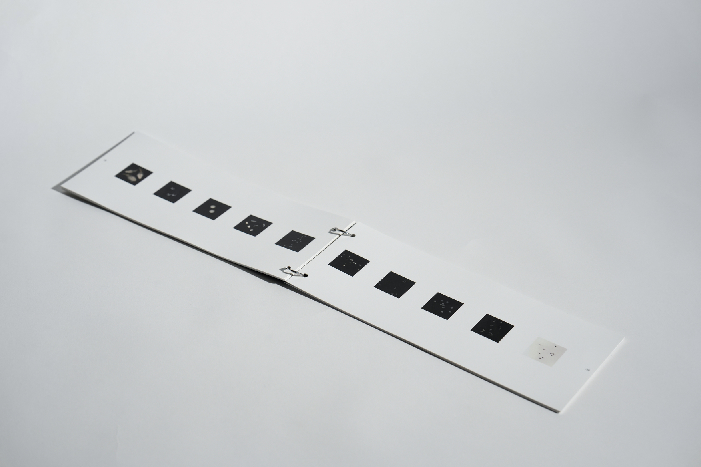











‘accessor’는 ‘고백하다, 고하다’를 뜻하는 라틴어 confiteri에서 파생된 confessor(고해자)에서 착안한 말로, 타인의 숨겨진 감정과 비밀을 받아들여 새로운 형태로 전환하는 상징적 존재로 기능한다. 본 전시에서 ‘고해’는 종교적 속죄가 아니라 스스로를 드러내고 새롭게 장식하는 미학적 실천이며, 감춰졌던 상처와 욕망은 ‘액세서리(accessory)’라는 이름 아래 시각적 오브제로 재탄생한다. 장식이 곧 꾸밈이라는 통념을 의도적으로 전복하여, ‘accessor’는 장식을 매개로 감정을 드러내고 내면의 페르소나(Persona, P)를 외부로 확장하는 주체가 된다. 팀원들은 각자의 ‘accessor’로서 서로의 비밀을 나누고 그것을 시각 언어로 변환하며, 개인의 취약성을 공유 가능한 서사이자 다층적 의미를 지닌 오브제로 다시 태어나게 한다.
2025, 팀 작업, 기여도: 50%